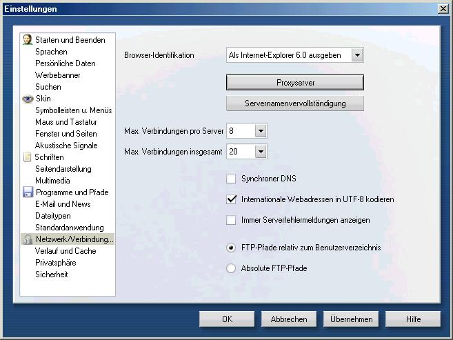

Proxy Einstellungen für Browser
JAP im Opera einrichten
Um JAP im Opera einzurichten gehen Sie folgendermaßen vor :
1.) Wählen Sie im Menü "Extras" das Untermenü "Einstellungen". Danach öffnet sich das Einstellungsfenster. Wählen sie in diesem den Punkt "Netzwerk/Verbindung..." :

2.) Nun wird der Proxyserver eingestellt. Dazu klicken Sie auf die Schaltfläche "Proxyserver". Jetzt öffnet sich ein Fenster in dem Sie folgende Einstellungen vornehmen müssen:
Setzen Sie das Häkchen vor HTTP, HTTPS und FTP und tragen Sie jeweils in das leere Feld dahinter die Serveradresse "127.0.0.1" ein. Als Port wird 4001 eingetragen.

Wollen Sie Adressen festlegen, für die JAP nicht verwendet werden soll, so können Sie im Feld Proxyserver für folgende Adressen nicht benutzen: Ausnahmen festlegen, wenn Sie den Haken dazu setzen.
Beachten Sie bitte, dass solche Ausnahmen flexibler bei einem Filterproxy wie Proxomitron vorgenommen werden können.
Hinweis: Falls Sie im JAP einen anderen Listenerport eingestellt haben müssen Sie diesen anstatt 4001 eintragen.